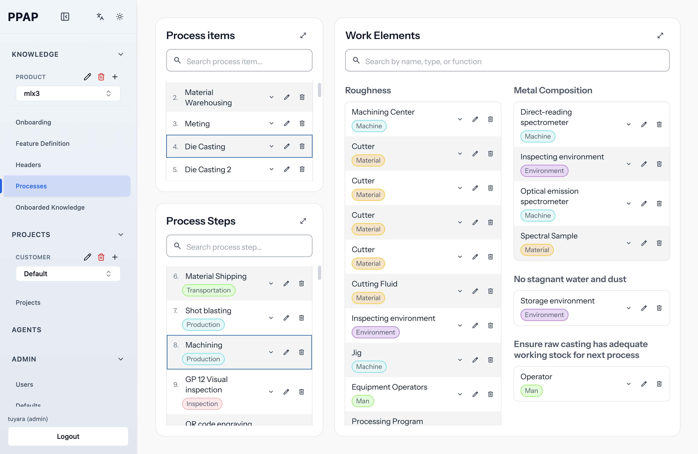
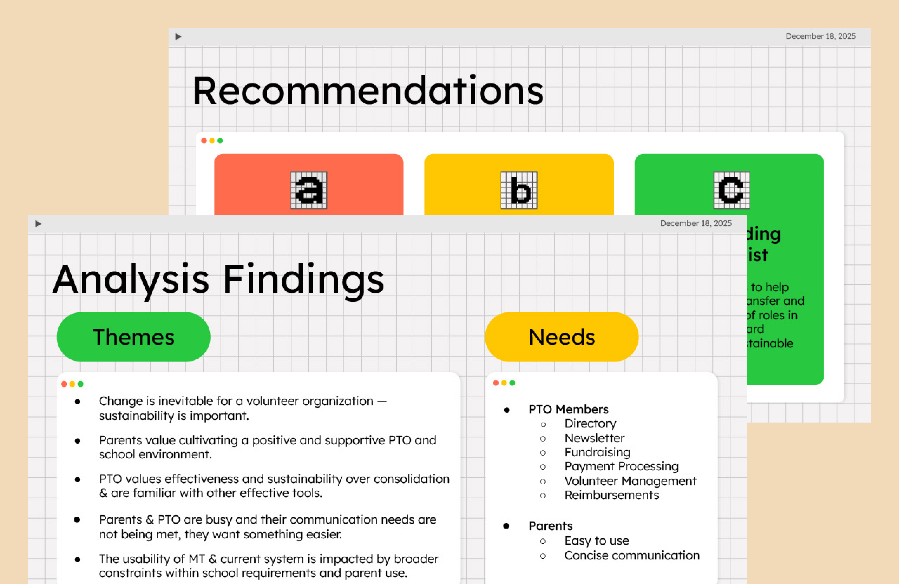

Tuyara Chinbat is a product designer making complexity intuitive.
Currently
Pursuing an M.S. in HCI
at the University of Michigan.
Focus
Designing accessible, research-led products across complex systems.
Selected work

FastOS/Product Design 2026
Bach PTO/UX Research 2025